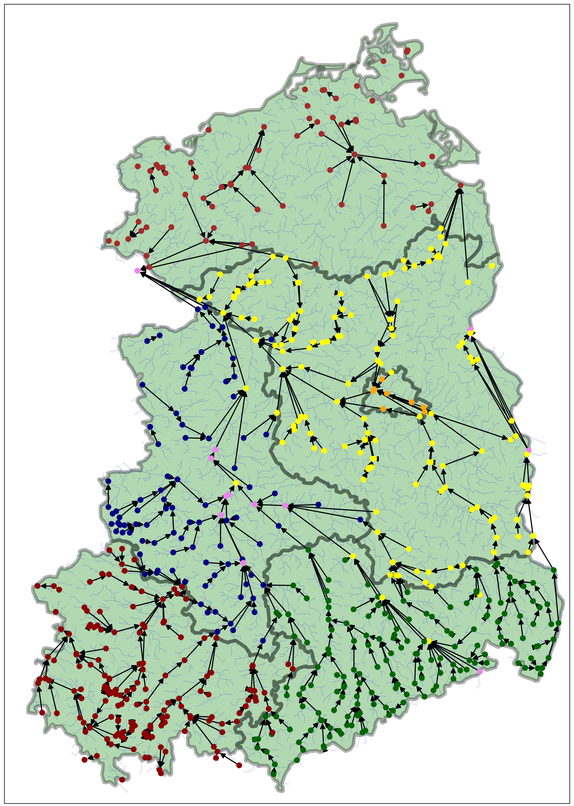

RiversEastGermany
We provide a causal ground truth graph with 666 nodes that spans over the full area of the former east-german republic. For each nodes, a high resolution time-series that spans 5 years is provided.
We provide a causal ground truth graph with 666 nodes that spans over the full area of the former east-german republic. For each nodes, a high resolution time-series that spans 5 years is provided.
On top of the main benchmark, we provide a similary sized ground truth graph for the state of bavaria which holds 495 nodes and time-series for the same 5 year period.
Causal discovery, or identifying causal relationships from observational data, is a notoriously challenging task, with numerous methods proposed to tackle it. De- spite this, in-the-wild evaluation is still lacking, as works frequently rely on syn- thetic data evaluation and sparse real-world examples under critical theoretical assumptions.
Real-world causal structures, however, are often complex, evolv- ing over time, non-linear, and influenced by unobserved factors, making it hard for practitioners to select appropriate methods. To bridge this gap, we introduce CausalRivers, the largest in-the-wild causal discovery benchmarking kit for time series data to date.
CausalRivers features an extensive dataset on river discharge that covers the complete eastern German territory (666 measurement stations) and the state of Bavaria (494 measurement stations). It spans the years 2019 to 2023 with a 15-minute temporal resolution. Further, we provide data from a recent flood around the Elbe River, as an event with a pronounced distributional shift. Lever- aging multiple sources of information and time-series meta-data, we constructed two distinct causal ground truth graphs (Bavaria and eastern Germany). These graphs can be sampled to generate thousands of subgraphs to benchmark causal discovery across diverse and challenging settings.
To demonstrate the utility of our benchmarking kit, we evaluate several causal discovery approaches through multiple experiments and introduce effective baselines, identifying several areas for enhancement. CausalRivers has the potential to facilitate robust evaluations and comparisons of causal discovery methods. Besides this primary purpose, we also expect that this dataset will be relevant for connected areas of research, such as time series forecasting and anomaly detection. Based on this, we hope to estab- lish benchmark-driven method development that fosters advanced techniques for causal discovery, as is the case for many other areas of machine learning.
River discharge changing throughout the year
We keep this updated frequently so feel free to provide the results of your methods! (NEEDS PROPER UPDATES)
While Causal Rivers is, by far, the largest causal discovery benchmark for time series from real-world data, the more benchmarking the better! While we are not connected to these projects, we specifically encourage to also test your methods on:
Causal discovery in a complex industrial system: A time series benchmark
OCDB: Revisiting Causal Discovery with a Comprehensive Benchmark and Evaluation Framework
Realistically Generated Time-series for Benchmarking of Causal Discovery
CauseMe: An online system for benchmarking causal discovery methods
@inproceedings{
2025causalrivers,
title={CausalRivers - Scaling up benchmarking of causal discovery for real-world time-series},
author={Gideon, Stein and Maha, Shadaydeh and Niklas, Penzel and Joachim Denzler,},
booktitle={The Thirteenth International Conference on Learning Representations},
year={2025},
url={https://openreview.net/forum?id=wmV4cIbgl6}}